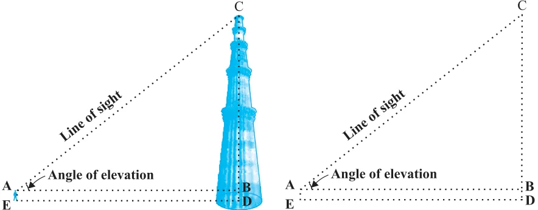
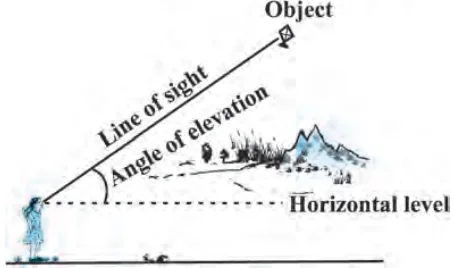
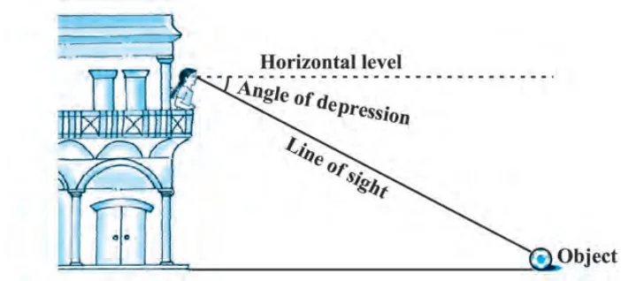
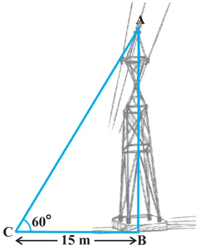
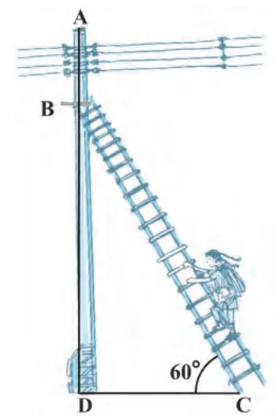
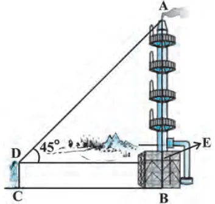
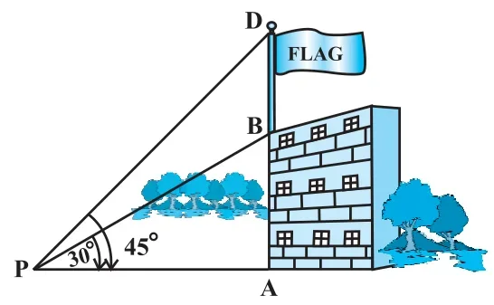
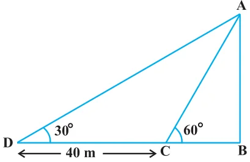
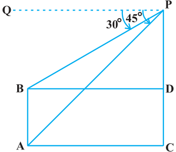
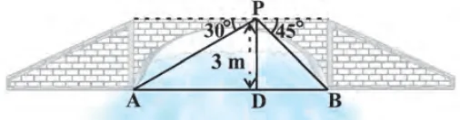

SOME APPLICATIONS OF TRIGONOMETRY
In the previous chapter, you have studied about trigonometric ratios. In this chapter, you will be studying about some ways in which trigonometry is used in the life around you.
Let us consider Fig. 8.1 of prvious chapter, which is redrawn below in Fig. 9.1.

In this figure, the line AC drawn from the eye of the student to the top of the minar is called the line of sight. The student is looking at the top of the minar. The angle BAC, so formed by the line of sight with the horizontal, is called the angle of elevation of the top of the minar from the eye of the student.
Thus, the line of sight is the line drawn from the eye of an observer to the point in the object viewed by the observer. The angle of elevation of the point viewed is the angle formed by the line of sight with the horizontal when the point being viewed is above the horizontal level, i.e., the case when we raise our head to look at the object (see Fig. 9.2).

Now, consider the situation given in Fig. 8.2. The girl sitting on the balcony is looking down at a flower pot placed on a stair of the temple. In this case, the line of sight is below the horizontal level. The angle so formed by the line of sight with the horizontal is called the angle of depression.
Thus, the angle of depression of a point on the object being viewed is the angle formed by the line of sight with the horizontal when the point is below the horizontal level, i.e., the case when we lower our head to look at the point being viewed (see Fig. 9.3).

Now, you may identify the lines of sight, and the angles so formed in Fig. 8.3. Are they angles of elevation or angles of depression?
Let us refer to Fig. 9.1 again. If you want to find the height CD of the minar without actually measuring it, what information do you need? You would need to know the following:
- (i)the distance DE at which the student is standing from the foot of the minar
- (ii)the angle of elevation, \(\angle \text{BAC}\), of the top of the minar
- (iii)the height AE of the student.
Assuming that the above three conditions are known, how can we determine the height of the minar?
In the figure, CD = CB + BD. Here, BD = AE, which is the height of the student.
To find BC, we will use trigonometric ratios of \(\angle \text{BAC}\) or \(\angle \text{A}\).
In \(\Delta\,\text{ABC}\), the side BC is the opposite side in relation to the known \(\angle \text{A}\). Now, which of the trigonometric ratios can we use? Which one of them has the two values that we have and the one we need to determine? Our search narrows down to using either tan A or cot A, as these ratios involve AB and BC.
Therefore, \(\tan \text{A} = \dfrac{\text{BC}}{\text{AB}}\) or \(\cot \text{A} = \dfrac{\text{AB}}{\text{BC}}\), which on solving would give us BC.
By adding AE to BC, you will get the height of the minar.
Now let us explain the process, we have just discussed, by solving some problems.
Example 1 :
A tower stands vertically on the ground. From a point on the ground, which is 15 m away from the foot of the tower, the angle of elevation of the top of the tower is found to be \(60^{\circ}\). Find the height of the tower.
Solution :
First let us draw a simple diagram to represent the problem (see Fig. 9.4). Here AB represents the tower, CB is the distance of the point from the tower and \(\angle \text{ACB}\) is the angle of elevation. We need to determine the height of the tower, i.e., AB. Also, ACB is a triangle, right-angled at B.

To solve the problem, we choose the trigonometric ratio \(\tan 60^{\circ}\) (or \(\cot 60^{\circ}\)), as the ratio involves AB and BC.
Now, \(\tan 60^{\circ} = \dfrac{\text{AB}}{\text{BC}}\)
i.e., \(\sqrt{3} = \dfrac{\text{AB}}{15}\)
i.e., \(\text{AB} = 15\sqrt{3}\)
Hence, the height of the tower is \(15\sqrt{3}\) m.
Example 2 :
An electrician has to repair an electric fault on a pole of height 5 m. She needs to reach a point 1.3m below the top of the pole to undertake the repair work (see Fig. 9.5). What should be the length of the ladder that she should use which, when inclined at an angle of \(60^{\circ}\) to the horizontal, would enable her to reach the required position? Also, how far from the foot of the pole should she place the foot of the ladder? (You may take \(\sqrt{3} = 1.73\))

Solution :
In Fig. 9.5, the electrician is required to reach the point B on the pole AD.
So, BD = AD – AB = (5 – 1.3)m = 3.7 m.
Here, BC represents the ladder. We need to find its length, i.e., the hypotenuse of the right triangle BDC.
Now, can you think which trigonometic ratio should we consider?
It should be \(\sin 60^{\circ}\).
So, \(\dfrac{\text{BD}}{\text{BC}} = \sin 60^{\circ}\) or \(\dfrac{3.7}{\text{BC}} = \dfrac{\sqrt{3}}{2}\)
Therefore, \(\text{BC} = \dfrac{3.7 \times 2}{\sqrt{3}} = 4.28 \text{ m (approx.)}\)
i.e., the length of the ladder should be 4.28 m.
Now, \(\dfrac{\text{DC}}{\text{BD}} = \cot 60^{\circ} = \dfrac{1}{\sqrt{3}}\)
i.e., \(\text{DC} = \dfrac{3.7}{\sqrt{3}} = 2.14 \text{ m (approx.)}\)
Therefore, she should place the foot of the ladder at a distance of 2.14 m from the pole.
Example 3 :
An observer 1.5 m tall is 28.5 m away from a chimney. The angle of elevation of the top of the chimney from her eyes is \(45^{\circ}\). What is the height of the chimney?

Solution :
Here, AB is the chimney, CD the observer and \(\angle \text{ADE}\) the angle of elevation (see Fig. 9.6). In this case, ADE is a triangle, right-angled at E and we are required to find the height of the chimney.
We have AB = AE + BE = AE + 1.5
and DE = CB = 28.5 m
To determine AE, we choose a trigonometric ratio, which involves both AE and DE. Let us choose the tangent of the angle of elevation.
Now, \(\tan 45^{\circ} = \dfrac{\text{AE}}{\text{DE}}\)
i.e., \(1 = \dfrac{\text{AE}}{28.5}\)
Therefore, AE = 28.5
So the height of the chimney (AB) = (28.5 + 1.5) m = 30 m.
Example 4 :
From a point P on the ground the angle of elevation of the top of a 10 m tall building is \(30^{\circ}\). A flag is hoisted at the top of the building and the angle of elevation of the top of the flagstaff from P is \(45^{\circ}\). Find the length of the flagstaff and the distance of the building from the point P. (You may take \(\sqrt{3} = 1.732\))
Solution :
In Fig. 9.7, AB denotes the height of the building, BD the flagstaff and P the given point. Note that there are two right triangles PAB and PAD. We are required to find the length of the flagstaff, i.e., DB and the distance of the building from the point P, i.e., PA.
Since, we know the height of the building AB, we will first consider the right \(\Delta\,\text{PAB}\).

We have \(\tan 30^{\circ} = \dfrac{\text{AB}}{\text{AP}}\)
i.e., \(\dfrac{1}{\sqrt{3}} = \dfrac{10}{\text{AP}}\)
Therefore, \(\text{AP} = 10\sqrt{3}\)
i.e., the distance of the building from P is \(10\sqrt{3}\) m = 17.32 m.
Next, let us suppose DB = x m. Then AD = (10 + x) m.
Now, in right \(\Delta\,\text{PAD}\), \(\tan 45^{\circ} = \dfrac{\text{AD}}{\text{AP}} = \dfrac{10 + x}{10\sqrt{3}}\)
Therefore, \(1 = \dfrac{10 + x}{10\sqrt{3}}\)
i.e., \(x = 10\left(\sqrt{3} - 1\right) = 7.32\)
So, the length of the flagstaff is 7.32 m.
Example 5 :
The shadow of a tower standing on a level ground is found to be 40 m longer when the Sun’s altitude is \(30^{\circ}\) than when it is \(60^{\circ}\). Find the height of the tower.

Solution :
In Fig. 9.8, AB is the tower and BC is the length of the shadow when the Sun’s altitude is \(60^{\circ}\), i.e., the angle of elevation of the top of the tower from the tip of the shadow is \(60^{\circ}\) and DB is the length of the shadow, when the angle of elevation is \(30^{\circ}\).
Now, let AB be h m and BC be x m. According to the question, DB is 40 m longer than BC.
So, DB = (40 + x) m
Now, we have two right triangles ABC and ABD.
In \(\Delta\,\text{ABC}\), \(\tan 60^{\circ} = \dfrac{\text{AB}}{\text{BC}}\)
or, \(\sqrt{3} = \dfrac{h}{x} \qquad (1)\)
In \(\Delta\,\text{ABD}\), \(\tan 30^{\circ} = \dfrac{\text{AB}}{\text{BD}}\)
i.e., \(\dfrac{1}{\sqrt{3}} = \dfrac{h}{x + 40} \qquad (2)\)
From (1), we have \(h = x\sqrt{3}\)
Putting this value in (2), we get \(\left(x\sqrt{3}\right)\sqrt{3} = x + 40\), i.e., \(3x = x + 40\)
i.e., \(x = 20\)
So, \(h = 20\sqrt{3} \qquad \text{[From (1)]}\)
Therefore, the height of the tower is \(20\sqrt{3}\) m.
Example 6 :
The angles of depression of the top and the bottom of an 8 m tall building from the top of a multi-storeyed building are \(30^{\circ}\) and \(45^{\circ}\), respectively. Find the height of the multi-storeyed building and the distance between the two buildings.

Solution :
In Fig. 9.9, PC denotes the multi-storyed building and AB denotes the 8 m tall building. We are interested to determine the height of the multi-storeyed building, i.e., PC and the distance between the two buildings, i.e., AC.
Look at the figure carefully. Observe that PB is a transversal to the parallel lines PQ and BD. Therefore, \(\angle \text{QPB}\) and \(\angle \text{PBD}\) are alternate angles, and so are equal. So \(\angle \text{PBD} = 30^{\circ}\). Similarly, \(\angle \text{PAC} = 45^{\circ}\).
In right \(\Delta\,\text{PBD}\), we have
\(\dfrac{\text{PD}}{\text{BD}} = \tan 30^{\circ} = \dfrac{1}{\sqrt{3}}\) or \(\text{BD} = \text{PD}\sqrt{3}\)
In right \(\Delta\,\text{PAC}\), we have
\(\dfrac{\text{PC}}{\text{AC}} = \tan 45^{\circ} = 1\)
i.e., PC = AC
Also, PC = PD + DC, therefore, PD + DC = AC.
Since, AC = BD and DC = AB = 8 m, we get \(\text{PD} + 8 = \text{BD} = \text{PD}\sqrt{3}\) (Why?)
This gives \(\text{PD} = \dfrac{8}{\sqrt{3} - 1} = \dfrac{8\left(\sqrt{3} + 1\right)}{\left(\sqrt{3} + 1\right)\left(\sqrt{3} - 1\right)} = 4\left(\sqrt{3} + 1\right) \text{m}\).
So, the height of the multi-storeyed building is \(\left\{4\left(\sqrt{3} + 1\right) + 8\right\} \text{m} = 4\left(3 + \sqrt{3}\right) \text{m}\) and the distance between the two buildings is also \(4\left(3 + \sqrt{3}\right) \text{m}\).
Example 7 :
From a point on a bridge across a river, the angles of depression of the banks on opposite sides of the river are \(30^{\circ}\) and \(45^{\circ}\), respectively. If the bridge is at a height of 3 m from the banks, find the width of the river.
Solution :
In Fig 9.10, A and B represent points on the bank on opposite sides of the river, so that AB is the width of the river. P is a point on the bridge at a height of 3 m, i.e., DP = 3 m. We are interested to determine the width of the river, which is the length of the side AB of the \(\Delta\,\text{APB}\).

Now, AB = AD + DB
In right \(\Delta\,\text{APD}\), \(\angle \text{A} = 30^{\circ}\).
So, \(\tan 30^{\circ} = \dfrac{\text{PD}}{\text{AD}}\)
i.e., \(\dfrac{1}{\sqrt{3}} = \dfrac{3}{\text{AD}}\) or \(\text{AD} = 3\sqrt{3} \text{ m}\)
Also, in right \(\Delta\,\text{PBD}\), \(\angle \text{B} = 45^{\circ}\). So, BD = PD = 3 m.
Now, \(\text{AB} = \text{BD} + \text{AD} = 3 + 3\sqrt{3} = 3\left(1 + \sqrt{3}\right) \text{m}\).
Therefore, the width of the river is \(3\left(\sqrt{3} + 1\right) \text{m}\).